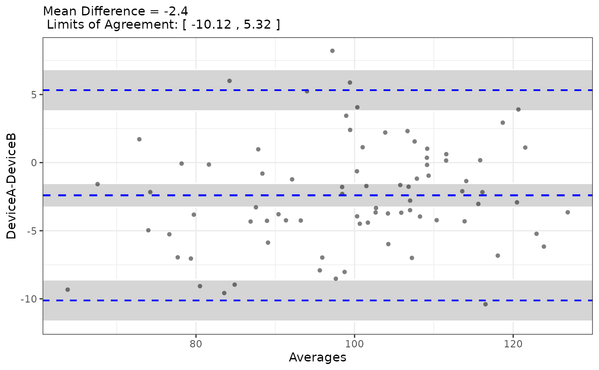

Generates a Bland-Altman plot to visualize the agreement between two variables.
Usage
PlotBlandAltman(
data,
Variable1,
Variable2,
DataFrame = lifecycle::deprecated()
)Value
A list containing:
- plot
A ggplot2 object of the Bland-Altman plot.
- stats
A list of Bland-Altman statistics from the BlandAltmanLeh package.
Examples
# Bland-Altman compares two measurements of the SAME quantity on the same
# scale. Here two devices measure the same underlying value, with device B
# carrying a small constant bias plus noise.
set.seed(101)
n <- 80
truth <- rnorm(n, mean = 100, sd = 15)
method_data <- data.frame(
SampleID = paste0("S", 1:n),
DeviceA = truth + rnorm(n, 0, 3),
DeviceB = truth + 2 + rnorm(n, 0, 3)
)
result <- PlotBlandAltman(method_data, "DeviceA", "DeviceB")
# Agreement plot: mean difference (bias) and 95% limits of agreement
result$plot

# Underlying statistics
result$stats$mean.diffs
#> [1] -2.400073